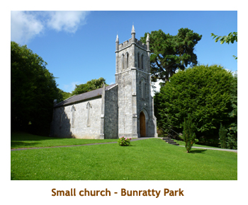
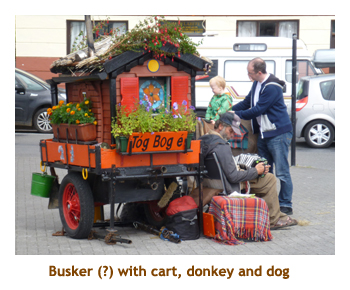
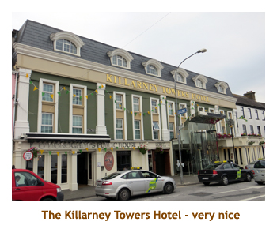
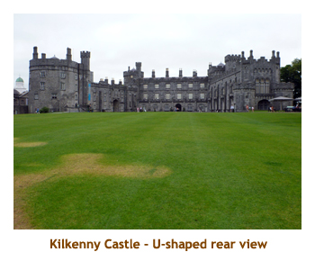

[ Home ] [ Travel ] [ Photography ] [ Pets ] [ Games] [ Rowing] [ Physics ]


A Visit to Ireland - Part 2
Travel
Cruises
Past Cruises (Diaries)
Future Cruises
Rogues Galleries
Land Trips
Diaries (Land Trips)
Hawai'i - Big Island - 04'01
Hawai'i - Maui - 05'02
Hawai'i - Big Island - 04'03
Hawai'i - Kaua'i - 09'04
Hawai'i - Big Island - 04'06
Hawai'i - Maui - 04'06
Mainland China - 05'07
Phoenix, Arizona - 12'07
Greek Isles - 05'08
Hawai'i - Kaua'i - 09'08
Hawai'i - Big Island - 09'09
Hawai'i - Maui - 05'12
Hawai'i - Big Island - 04'13
Ireland - 08'13
Mexico - Cancun 11'13
France/Belgium/Lux 07'15
Hawai'i - Big Island - 05'17
England / Wales - 06'17
Hawai'i - Big Island - 09'19
Photography
Cameras
Underwater
Pets
Tara
Blackie
Whitey
Muffy
Ollie
Rusty
Fluffy
Rufus&Dufus
Games
Rowing
Physics
Day 9 (Aug 17) - A second day in Galway
| . |
Our goal was the Kylemore Abbey, but along the way the bus driver took us on an unscheduled diversion to the Erriff river, where he has seen salmon jumping a few days before. We took a very narrow road and had a 15 minute stop at the river. From the bridge I saw 2 salmon jump. To be honest, I heard the splash and saw the ripples and assumed they were salmon! At 12:00 noon, we arrived at Kylemore Abbey, nestled at the base of Druchruach Mountain on the shores of Lough Pollacappul. The abbey was originally a castle built in 1867 by millionaire Mitchell Henry. In 1903 it changed hands to the Duke and Duchess of Manchester. In 1920 it was donated to the Benedictine nuns (ie. became an abbey). Today it remains a religious boarding school for girls. We were given 2.5 hours to visit the castle, the gothic church (1877), the Victorian garden and have lunch. As it was just after noon, we opted for lunch first. We popped into the gift shop complex and had salad and pizza.
After lunch we walked over to the castle and did a guided tour through several rooms (a lot of it is not open to the public). We hiked through the woods to the little church, which was a mini-cathedral. Finally we retraced our steps back to the gift shop and caught the shuttle bus for the gardens. We had time for a quick walk through the splendid garden then caught the shuttle back to the park entrance. The we drove back to the town of Galway, taking a different route than we had come. As we passed through some bogland, Patrick walked us into the bog and showed us where and how the peat was extracted. For the rest of the trip to Galway, Patrick read the second part of "The Quiet Man". In Galway (by 4:00 PM) the bus stopped at St. Nicholas Cathedral for a quick walk thru, We also drove by the famous Spanish Arch. Then we were dropped off at Eyre Square where the JFK memorial is. We were given until 6:15 to wander the town. There was an optional group dinner tonight that we decided not to do. So, we found a restaurant and had our dinner (beef stew and Guinness). We enjoyed walking the crowded streets and found our way back to the square in time for the bus. Back at the hotel I read my book while Marjorie did laundry. There was a self service laundry room in the hotel. Very nice!
| . |
Day 10 (Aug 18) - Galway to Limerick
We were now leaving the cost and heading inland towards Limerick., Once again we were driving by green farms and fields of sheep. Along the way we stoped at a roadside memorial to the Irish people who suffered or died in the great famine of 1845 - 52. Just outside of Limerick we pulled into the Bunratty Folk Park about 2:00 PM. This was a reconstructed 19th century village highlighted by a large Norman castle built around 1425. We were given two hours for lunch and wandering. Being as it was early afternoon, we started with a fish & chip lunch at McNamara's. Afterwards we climbed the castle tower. The castle has been reconstructed inside and hosts medieval banquets at night. It was 4 stories with several rooms on each floor. The banquet hall was immense.
 |
 |
The sun came out and we spent the rest of the time wandering through the various village buildings, including a beautiful stone church (Ardcrony's Church). One area featured two grist mills - one a vertical mill (normal water wheel) and the other a horizontal mill (the water wheel is laid flat). There were lots of animals too - sheep, donkeys, cows, goats, chickens, etc. When our time was up we reboarded the bus and drove on to the town of Limerick, arriving about 5:00. After checking in to the George Hotel, we wandered around the tourist area of town. It was relatively deserted after the crowds we had encountered in other Irish cities. There was an optional medieval dinner excursion offered this evening, but we didn't attend. We were still feeling our lunch, so found a nice restaurant and just had an appetizer each. After a bit more wandering we returned to the hotel and went to bed.
Day 11 (Aug 19) - Limerick to Killarney
 |
|||
 The loop took us back to Dingle by about 11:30, so we stopped for lunch. We had good fish and chips at Harrington's. Afterwards we had abut an hour to wander around the village. It is on the ocean and hence is mainly a fishing village. Patrick sprang for an ice cream for all at Murphy's Ice Cream Shop. Dingle is famous for Fungie the (bottlenose) dolphin. This is a real dolphin who has made Dingle Bay his home. Then it was time to head east to Killarney. Along the way we stopped at a large sandy beach, but there weren't many people out (cool and windy). We arrived in Killarney about 4:30. After we checked in to the Killarney Towers Hotel, we wandered out to the tourist area to check out the souvenirs. We found a large shop that had tons of stuff and bought a t-shirt and tea towels. We were back to the hotel in time for our 7:00 group dinner. The dinner was very good. We wandered the town a bit after dinner and then headed to bed. We would be staying two nights in Killarney - woohoo!
|  |  |
Day 12 (Aug 20) - A second day in Killarney
We drove the N70, which is the famous Ring of Kerry road. The first town we hit was Killorglin where we saw King Puck. This is a goat from an ancient (circa 13th century) ritual related to matchmaking. From Killorglin we travelled along the coast where we could see across to Dingle Bay where we were yesterday. At the western tip of the road we could see some nearby islands but is was too hazy to see the Skelligs. I was hoping to get a photo of Skellig Michael. Coming around the bottom end of the ring road we stopped at a large beach at Caherdaniel where Patrick and David set up an Irish whiskey tasting. They had quite a variety of whiskies, but I must admit I didn't try one. The Irish Coca Cola was very good though. Continuing on, we hit Sneem about midday, so we stopped for lunch and a wander. We picked The Blue Bull and it was quite good. Finally we drove back to our hotel in Killarney. There was an optional dinner (that we did attend) at Kate Kearney's Cottage. The food was very good and the live band and Irish dancers were excellent. A fun evening!
Day 13 (Aug 21) - Killarney to Cork
We had lunch (pizza) at a woollen mill / restaurant complex just a short walk from the castle. Afterwards we reboarded the bus and headed a bit farther from the city to Blarney Golf Club. We arrived at the hotel on the golf course about 2:00 PM. It was a huge hotel consisting of many 2 storey buildings spread out over the grounds. We checked in and the sun came out! Woohoo!! There was an optional afternoon tour to Cobh but we decided against it having been there several years earlier on a cruise. Instead we had a lazy sunny afternoon on the golf course. A few of our folks got up the energy to play 11 holes (for 15 Euros), but Marjorie and I just read our books. The hotel had a nice fitness center and I ended up doing a rowing workout. They had a C2 erg and I was really missing my daily sessions. That evening we had a group dinner at 7:15. It was extremely slow service. Our appetizers arrived at 8:15 and we were eating our main course at 9:00. We didn't wait for dessert to show up. We left the table, did a walk around the grounds and then headed to bed.
Day 14 (Aug 22) - From Cork back to Dublin
|  |
After lunch we reboarded and headed to our next stop near Kildare. This was at the Irish National Stud, one of the country's main racehorse breeding centers. The farm is also noted for it's wonderful gardens, especially the 100 year-old Japenese garden. As we approached the parking area the sun came out and the temperature whizzed up into the 20's. Gorgeous! We were given a walking tour of the horse pastures where about 6 multi-million dollar horses were grazing. It wasn't the breeding time of year, so nothing much was happening. After the tour we were free to check out the stables and the beautiful gardens. I really enjoyed this stop. We reboarded the bus and drove the rest of the way into Dublin, coming full circle back to the DT Hotel from what seemed like eons ago. It was about 5 :00 PM so we checked in and then wandered up to Baggot Street where there was a Tesco and a fish & chip shop. Back at the hotel we repacked our things ready to fly out tomorrow. We did an early night (as always).
Day 15 (Aug 23) - Dublin to Southampton